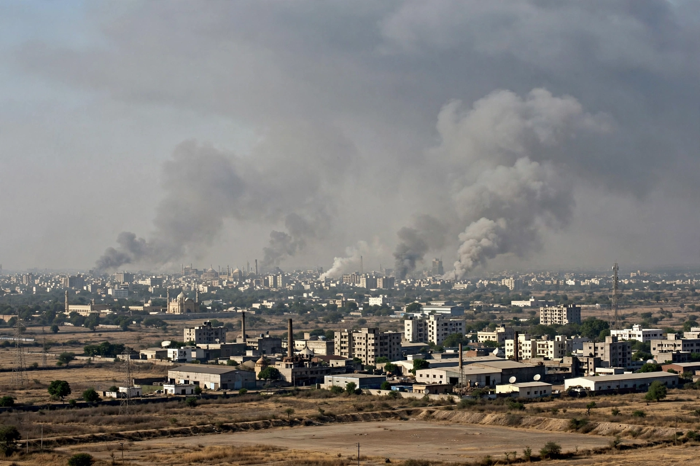

| 2002 Gujarat riots | |
|---|---|
 | |
| Date | 27 February – June 2002 (worst violence 28 Feb–3 Mar) |
| Location | Gujarat, India |
| Deaths | 790 Muslims and 254 Hindus (official); estimates up to ~2,000 total |
| Trigger | Burning of a train at Godhra killing 59 Hindu pilgrims |
The 2002 Gujarat riots were a series of communal riots in the western Indian state of Gujarat between February and June 2002, in which Hindus and Muslims attacked each other. The violence began after the burning of a train at Godhra station on 27 February 2002, which killed 59 Hindu pilgrims returning from Ayodhya. In the ensuing days, mobs attacked Muslim communities across the state, particularly in Ahmedabad, in some of the worst communal violence in India since Partition.
On 28 February, massacres took place at Naroda Patiya in Ahmedabad, where at least 97 Muslims were killed, and at the Gulbarg Society housing complex, where 69 people including former Congress MP Ehsan Jafri were killed. Violence also struck Vadodara, and thousands of homes and businesses were burned; an estimated 100,000 or more people, mostly Muslims, were displaced into relief camps. Attacks on Hindus also occurred, including retaliatory killings.
The state government under Chief Minister Narendra Modi was accused by human-rights organizations, journalists, and opposition parties of failing to prevent — and in some accounts abetting — the violence; Modi and his government denied wrongdoing. A Supreme Court–appointed Special Investigation Team concluded in 2012 that it found no prosecutable evidence against Modi, a finding upheld by the Supreme Court in 2022. Trials produced convictions in several massacre cases, including Naroda Patiya, though some convictions were later overturned or reduced on appeal.
The riots remain among the most contested events in modern Indian politics. Modi's subsequent rise to national leadership revived debate over accountability, and the events continue to shape discussions of communalism, state responsibility, and impunity in India.